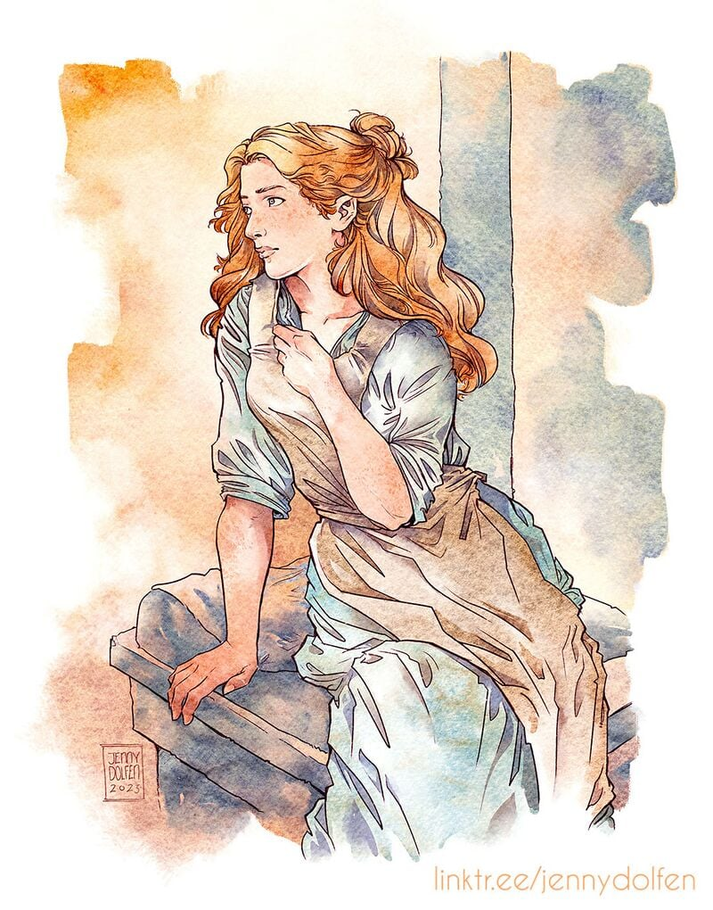

Simply Typed Existence

The girl with a thing for foundations of computer science :D
Hi, my name is Parnian (Anna) Naderi. I am an up-and-coming PhD student of Computer Science at Vrije Universiteit Amsterdam, supervised by Prof. Klaus von Gleissenthall. I am also a research assistant to Prof. Dr. Lutz Schroeder, working on the uniform interpolation property of coalgebraic modal logics.
Research Interests
- Mathematical logic
- Proof assistants (in particular, Coq)
- Formal methods and verification
- Hardware security
Bio
Before coming to the VuA, I was an MSc student of computer science at the Univerity of Tehran, advised by Dr. Majid Alizadeh for working on the implementation of the uniform interpolation property of substructural logics in Rocq proof assistant. I received my bachelor of science degree in the same major from Sharif University of Technology.